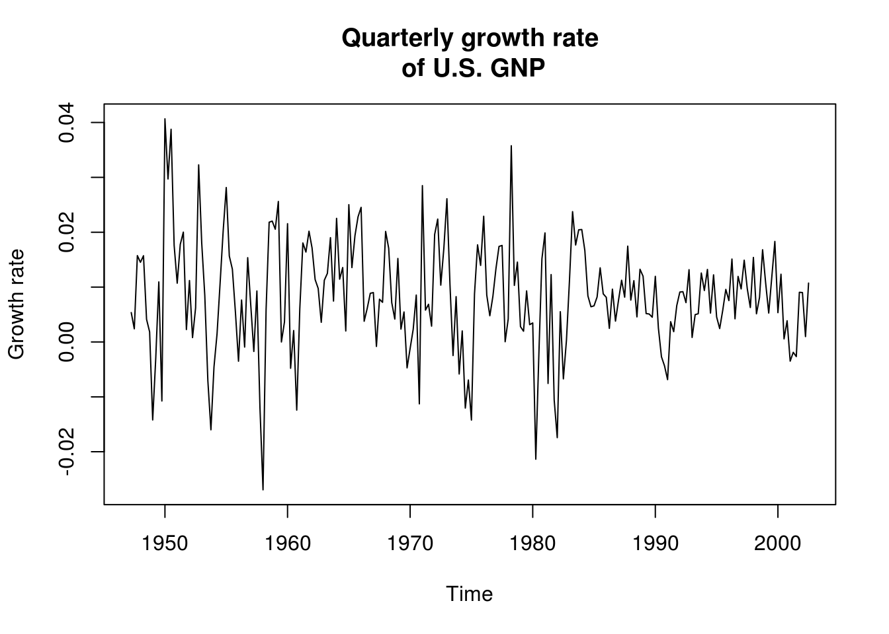
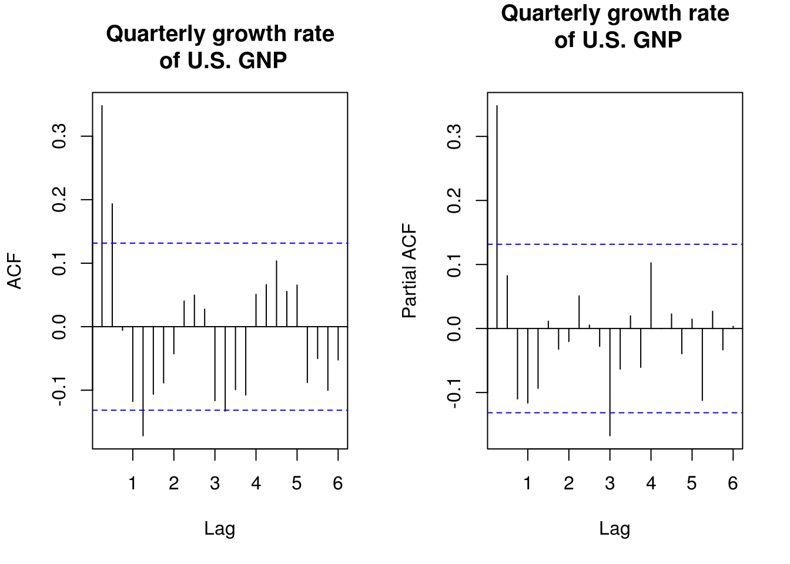
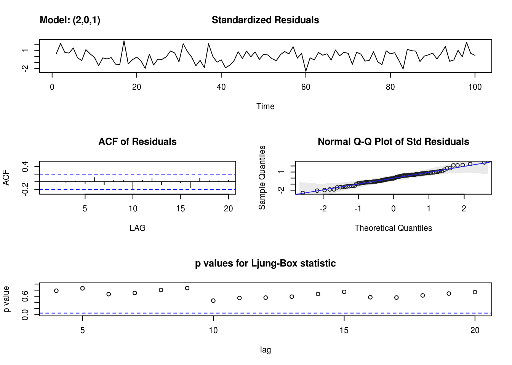

2.2 Box–Jenkins methodology for ARMA models
The Wold decomposition theorem states that any second-order stationary time series can be represented as a deterministic process and a stochastic linear process, which can be represented as a causal MA(\(\infty\)) series of the form \[Y_t = \sum_{j = 0}^\infty \psi_j\varepsilon_{t-j}, \qquad \varepsilon_t \sim \mathrm{WN}(0, \sigma^2),\quad \psi_0 = 1, \quad\sum_{j = 0}^\infty \psi_j^2 < \infty\]
This does provide a justification for using an ARMA model for modelling. The latter may not be parsimonious nor useful at characterizing the data generating mechanism, but they nevertheless provide in some simple cases a good approximation.
The Box–Jenkins methodology for ARMA models (dating back to time where computing ressources were scarce) allows one to select the order of an AR(\(p\)), MA(\(q\)) or ARMA(\(p, q\)) by visual inspection of the (partial) correlograms. Both should always go alongside one another.
- Apply a transformation of the data \(X_t\) where appropriate
- logarithm, Box–Cox transform
- differencing so that the series appears linear.
- Correlogram
- Determine the MA(\(q\)) order by looking at the autocorrelation, at the points for which \(\rho_k \neq 0\) for \(k \leq q\) and \(r_k \approx 0\) for \(k>q\).
- For an AR(\(p\)) process, the autocorrelation function should decay exponentially, with possible oscillation patterns.
- For an ARMA(\(p, q\)) model, the pattern is irregular for lags \(k = 1, \ldots, p\) and go to zero as \(k \to \infty\).
- Partial correlogram
- Parameters should be zero at lags \(k>p\) for the AR(\(p\)) model, and nonzero otherwise
- The parameters decay exponentially in the MA(\(q\)) model
- The parameters decrease to zero as \(k \to \infty\) for the ARMA(\(p, q\)) model.
The function to fit these models is arima, whose arguments are specified via order = c(p, d, q). Ignore the d component for now in the triple \((p, d, q)\) by setting it to zero. Other options are sarima from astsa, which is a wrapper around arima. sarima provides diagnostic plots alongside and includes a constant by default, but the syntax differs from arima and it takes directly components \(p\), \(d\) and \(q\). The function Arima from Hyndman’s forecast package is yet another wrapper around arima. An explanation of the differences can be found in Forecasting: principles and practice, at the bottom of the page.
The
Arima()command from theforecastpackage provides more flexibility on the inclusion of a constant
It also correctly labels the latter. Depending on your model, it may be the level (mean), an intercept, the linear trend (slope, or drift in the time serie literature). If we take first difference, the constant is the drift, etc.
Warning: You may stumble on the web on auto.arima. Beware of the naive and automated selection implemented by this function (which relies on what I would consider to be an ad hoc forward model selection). Use at your own risk.
ARMA models can be almost equivalent, as the following example from Shumway and Stoffer (example 3.28) illustrates. Note that as we use sarima, a constant is included by default. We can assess its significance by the usual \(t\)-test, if the error structure is appropriate.
library(astsa)
gnpgr = diff(log(gnp)) # growth rate of GNP
main <- "Quarterly growth rate\n of U.S. GNP"
plot(gnpgr, main = main, ylab = "Growth rate")
# There is a different mean in each quarter, but forego the seasonal effect
# This is obvious in the following plot, which plots (in order), separating
# by quarter monthplot(gnpgr, main = main, ylab = 'Growth rate', xlab =
# 'Quarter')
par(mfrow = c(1, 2))
TSA::acf(gnpgr, 24, main = main)
pacf(gnpgr, 24, main = main)
# What does the period in the correlogram correspond to?The decrease in ACF/PACF suggests that either an AR(1) or an MA(2) might be appropriate here.
mod1 <- sarima(gnpgr, p = 1, d = 0, q = 0, details = FALSE) # AR(1)
print(mod1$ttable) Estimate SE t.value p.value
ar1 0.3467 0.0627 5.5255 0
xmean 0.0083 0.0010 8.5398 0mod2 <- sarima(gnpgr, p = 0, d = 0, q = 2, details = FALSE) # MA(2)
print(mod2$ttable) Estimate SE t.value p.value
ma1 0.3028 0.0654 4.6272 0.0000
ma2 0.2035 0.0644 3.1594 0.0018
xmean 0.0083 0.0010 8.7178 0.0000Having fitted these two models, we compare them using their linear proces (or MA(\(\infty\)) representation) and the theoretical autocorrelation and partial autocorrelation coefficients.
# Obtain the coefficients from the MA(Inf)
ARMAtoMA(ar = mod1$fit$coef[1], ma = 0, 4) # prints first 4 psi-weights[1] 0.34665450 0.12016934 0.04165724 0.01444067# Print sample ACF and superpose the theoretical coefficients implied by the
# model
par(mfrow = c(1, 2))
TSA::acf(gnpgr, 10, main = main)
points(seq(0, by = 0.25, length = 11), y = ARMAacf(ar = mod1$fit$coef[1], lag.max = 10),
col = "blue")
points(seq(0, by = 0.25, length = 11), y = ARMAacf(ma = mod2$fit$coef[1:2],
lag.max = 10), col = "red")
pacf(gnpgr, 10, main = main)
points(seq(0.25, by = 0.25, length = 10), y = ARMAacf(ar = mod1$fit$coef[1],
lag.max = 10, pacf = TRUE), col = "blue")
points(seq(0.25, by = 0.25, length = 10), y = ARMAacf(ma = mod2$fit$coef[1:2],
lag.max = 10, pacf = TRUE), col = "red")
Warning: in the example above, it is necessary here to add a constant coefficient. Economic theory suggest exponential growth, hence a trend of \(\exp(t \beta)\). This becomes a linear trend \(t\beta\) for log returns, and by differencing, we obtain the trend \(\beta\). The latter corresponds to the long term trend, or the quarterly growth rate, which is about 1%. The coefficient is significant even if it seems small and failing to include it leads to invalid inference about the state of the U.S. economy.
The last step is to check whether our process is causal and invertible. For the former, arima typically transforms to the stationary and invertible solution, so we should be good. We may end up having a root of \(\Phi(B)\) or \(\Theta(B)\) on the unit circle. In this case, the ARMA process is not stationary, while in the second, asymptotic normality of the estimator breaks down. We look at the roots of the polynomial \(\Phi(B)\) and \(\Theta(B)\) and check they indeed are outside the unit circle. It is easiest to check their norm or modulus.
# Is the MA(2) process invertible?
abs(polyroot(c(1, mod2$fit$coef[1:2]))) #MA roots[1] 2.216653 2.216653# Is the AR(1) process causal
Mod(polyroot(c(1, -mod1$fit$coef[1]))) #AR roots[1] 2.884717Sometimes models give similar output. The model choice should then be made on the grounds of parsimony: a simpler model that explains the data should be prefered. If the models are nested, for example an AR(1) and an AR(2), then a likelihood ratio test can be performed (watch out to make sure the same number of observations appear in the models if using a conditional likelihood). A quick way to do this is by looking at the Akaike’s information criterion. There are other information criterion, notably the BIC and bias-corrected version of AIC termed \(\mathrm{AIC}_{\mathrm{c}}\). They are defined respectively as
\[ \begin{align*} \mathrm{AIC}& = -2\ell(\boldsymbol{\theta})+2k,\\ \mathrm{BIC}& = -2\ell(\boldsymbol{\theta})+k\log(n),\\ \mathrm{AIC}_{\mathrm{c}}& = -2\ell(\boldsymbol{\theta})+2 \frac{kn}{n-k-1}. \end{align*} \]
In the formulas above, \(n\) is the sample size, \(k\) is the number of parameters in the model and \(\ell\) is log-likelihood. Since likelihood values increase with the number of parameters provided the models are nested (why?), the additional term penalizes complex models. The Schwartz’s information criterion (or Bayesian information criterion, BIC in short) includes the sample size in the penalty. The penalty could be viewed as a testing procedure similar to likelihood ratio test for nested models, where in place of the quantiles of the \(\chi^2\) distribution, one uses e.g. for AIC a threshold of \(2(k_1-k_2)\).
The BIC is consistent, meaning that it chooses the correct model with probability 1 as \(n \to \infty\). AIC is not consistent for model selection and this results typically in overfitting. For ARMA models models with zero mean, Brockwell and Davis advocate the use of a small-sample correction of AIC, AIC\(_\mathrm{c}\), with \(k = p+q+1\). The latter is equivalent to AIC when \(n \to \infty\).
Warning: The information criterion returned by astsa::sarima does not correspond to the definition above; the one implemented can be found in Shumway and Stoffer’s book. The principle remains the same: the lower, the better.
Here is an illustrative example on the dataset in the following exercise with a helper function to find the roots of the polynomials. I would like to bring your attention to the fact about the difficulties of optimizing some time series models. For example, one often finds that the ARMA(2,1) fits as well as the AR(1), even when the latter is the true underlying model. However, a quick look at the output below is illustrative of the trouble that lies ahead.
In the next exercise, you will be asked to practice your skills on simulated datasets. Before letting you proceed, I want to illustrate the different commands for fitting e.g. an ARMA(2, 1) model, and see what comes out.
library(forecast)
library(astsa)
load(url("http://sma.epfl.ch/~lbelzile/math342/Simulated_ARMA.RData"))
# Wrapper around arima from forecast library
mod_a <- arima(x3, order = c(2, 0, 1), transform.pars = TRUE)
mod_b <- Arima(x3, order = c(2, 0, 1), transform.pars = TRUE)
# Arima returns BIC, AIC and AICC
mod_c <- sarima(x3, p = 2, d = 0, q = 1, details = FALSE)
# sarima provides diagnostic plots unless `details=FALSE` unfortunately also
# returns all the optimization steps from `arima` in the new version
mod_a
Call:
arima(x = x3, order = c(2, 0, 1), transform.pars = TRUE)
Coefficients:
ar1 ar2 ma1 intercept
1.0872 -0.3739 0.9621 -0.6908
s.e. 0.1142 0.1182 0.1310 0.5769
sigma^2 estimated as 0.7271: log likelihood = -128.77, aic = 267.54mod_bSeries: x3
ARIMA(2,0,1) with non-zero mean
Coefficients:
ar1 ar2 ma1 mean
1.0872 -0.3739 0.9621 -0.6908
s.e. 0.1142 0.1182 0.1310 0.5769
sigma^2 estimated as 0.7574: log likelihood=-128.77
AIC=267.54 AICc=268.18 BIC=280.57mod_c$fit
Call:
stats::arima(x = xdata, order = c(p, d, q), seasonal = list(order = c(P, D,
Q), period = S), xreg = xmean, include.mean = FALSE, optim.control = list(trace = trc,
REPORT = 1, reltol = tol))
Coefficients:
ar1 ar2 ma1 xmean
1.0872 -0.3739 0.9621 -0.6908
s.e. 0.1142 0.1182 0.1310 0.5769
sigma^2 estimated as 0.7271: log likelihood = -128.77, aic = 267.54
$degrees_of_freedom
[1] 96
$ttable
Estimate SE t.value p.value
ar1 1.0872 0.1142 9.5220 0.0000
ar2 -0.3739 0.1182 -3.1627 0.0021
ma1 0.9621 0.1310 7.3417 0.0000
xmean -0.6908 0.5769 -1.1973 0.2341
$AIC
[1] 0.7612783
$AICc
[1] 0.7876612
$BIC
[1] -0.1345149You can (and should) check the roots of the AR and MA polynomials to make sure this is not happening. The argument transform.pars transforms the AR polynomial to the causal representation if it does not have a root on the unit circle. If the process is not invertible, the parameter lies on the boundary of the space and the usual standard errors obtained from the observed information matrix are not reliable. It is possible to use these models for forecasting, but their interpretation is awkward.
2.2.1 Exercise 2: Simulated series
- The
Simulated_ARMAdataset contains 8 time series (these examples are from Charlotte Wickham’s website). Fit ARMA models to those and select a model, justifying your choice. Be skeptical of the optimization routine and analyze the models carefully.